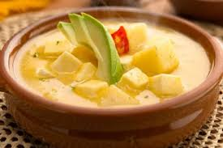
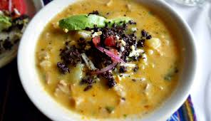
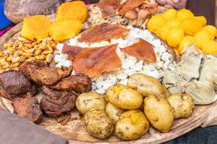

Locro de papas
Delicioso con la papa chola y el cuero de chancho.
Yahuarlocro
Con el menudo de borrego, aguacate y curtido.
Fritada
Deliciosa con mote, papas y chicharrón.
Hornado

Exquisito con mote, tostado y plátano maduro.
Delicioso con la papa chola y el cuero de chancho.
Con el menudo de borrego, aguacate y curtido.
Deliciosa con mote, papas y chicharrón.
Exquisito con mote, tostado y plátano maduro.